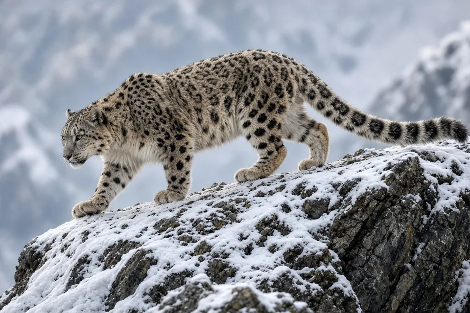
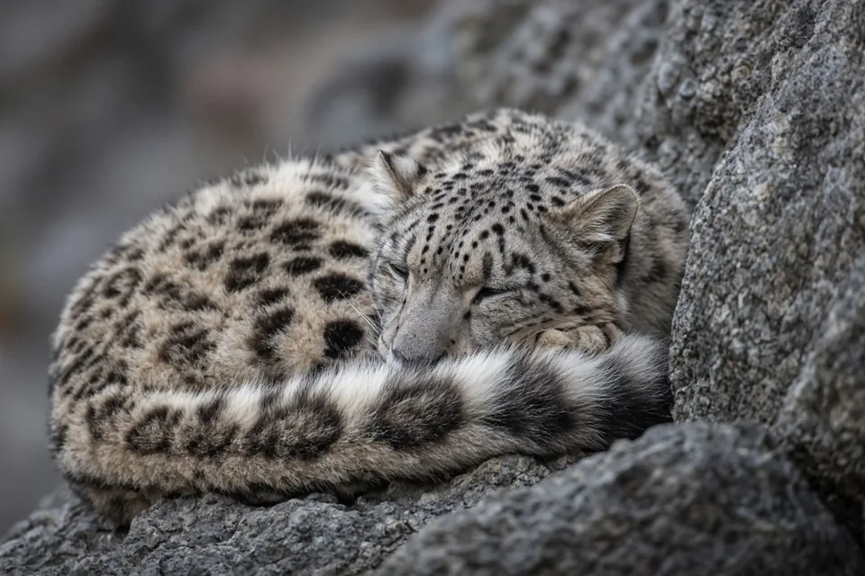

Home › Blog › Why do snow leopards have such long tails?
Why Do Snow Leopards Have Such Long Tails?
Snow leopards have long, thick tails to help them balance on steep mountain terrain and to wrap around themselves for warmth when resting. Their tails work alongside powerful legs, furry paws, and a dense coat.

A tail built for a mountain cat
The snow leopard lives in steep, broken mountain country where a missed step can have serious consequences. Its tail is unusually prominent even in photographs: long, thickly furred, and often carried behind the body as the animal negotiates uneven ground. This is not simply an ornament. WWF describes the tail as useful for balance on rocks and as a covering against cold weather. Both functions fit a predator that must move confidently through exposed terrain and then rest in freezing conditions.
It is tempting to imagine a tail acting like a rigid pole that holds the cat upright. A better picture is a movable part of the animal's body that can help it adjust its posture. A snow leopard is constantly coordinating its feet, spine, limbs, and tail. Its ability to move on cliffs comes from that whole system, not from the tail alone.
How the tail helps with balance
When a snow leopard steps across a narrow ledge or changes direction on a slope, it has to keep its body controlled while its feet find secure purchase. Moving a long tail changes how the animal distributes its mass and can help it manage rotations. This is especially relevant when the cat is turning, climbing, or landing. The tail is therefore best understood as one part of its agility rather than a magical counterweight that prevents every fall.
The animal's muscular hindquarters, flexible body, and broad paws matter too. WWF notes that snow leopards have strong hind legs and large, furry paws suited to rocky, snowy ground. If you watch a cat crossing difficult terrain, notice how it places each foot deliberately. The tail follows those movements and may swing or extend as the body changes position. The coordination is what makes the movement look effortless.

Why a thick tail matters in the cold
A snow leopard's tail has another job when the animal stops moving. Its dense fur provides a covering that the cat can draw around its body and face while resting. WWF specifically describes snow leopards wrapping their tails around themselves for protection from cold. This is useful in an environment where wind and exposed resting places can make conserving heat important.
The tail is not a substitute for the rest of the cat's winter adaptations. Its coat, furry paws, and behavior all contribute. Nor does every resting snow leopard have to wrap its tail around its nose. Animals change posture with temperature, comfort, and surroundings. Still, the image of a sleeping snow leopard with its tail across its face is a clear example of how the same body part can help in movement and rest.
Does the tail help a snow leopard hunt?
Snow leopards stalk mountain prey through difficult ground. Balance and controlled movement are valuable when approaching prey and navigating steep slopes, so the tail plausibly contributes to the physical demands of hunting. It would go too far to say the tail alone makes a successful hunter or that every tail movement has a particular hunting purpose. A hunt also depends on concealment, terrain, timing, and the prey's response.
Snow leopards are adapted to a setting where getting from one rock shelf to another can be as demanding as the final chase. Their spotted coats help them blend into mountain scenery, while their powerful legs provide the force for movement. Tail, paws, coat, and muscles are complementary adaptations rather than competing explanations.
What the tail cannot tell us
A very long tail does not reveal an individual snow leopard's age, health, or hunting success by itself. Perspective can make tails look larger or smaller in photographs, and thick winter fur changes the apparent outline. Nor should we assume that all large cats use their tails in exactly the same way. Different habitats create different movement challenges.
A useful comparison is a cat walking across a living-room floor versus a cat crossing loose stones on a steep hillside. Both use their whole bodies for balance, but the demands are not identical. The snow leopard's tail makes the most sense when viewed alongside the mountains where it lives. Protecting those habitats is important because an adaptation only helps when the animal can continue to occupy suitable terrain.
How to interpret wildlife footage
In a camera-trap clip, a snow leopard may appear to float over rocks because its movement is so controlled. Slow the scene down mentally: the cat is testing footholds, shifting weight, and matching each step to the shape of the ground. The tail is visible, but it is only one part of that coordinated sequence. A still image can freeze a tail in a dramatic curve without showing what happened before or after.
The same caution applies to footage of cubs. Young animals explore terrain while developing their movement skills. Their tails are part of their bodies from the beginning, but it would be misleading to infer a precise age or stage of development from tail posture alone. Watching the whole movement gives a more useful picture than treating a single tail position as a secret signal.
Frequently asked questions
Is a long tail normal for snow leopards?
Yes. A very long, thick tail is a characteristic part of snow leopard biology, although unusual changes or signs of injury deserve separate attention.
Does every snow leopard use its tail exactly the same way?
No. Individuals differ, and their behavior changes with the environment, activity, and circumstances. Avoid judging an animal from a single photograph or brief encounter.
Can the snow leopard's tail be understood without its habitat?
Not completely. Body structures and behaviors make more sense when considered alongside the places animals live and the challenges they face.
What is the most important thing to remember?
Focus on the well-supported explanation rather than a dramatic myth: WWF describes the tail as helping with balance on rocks and as a wrap against the cold.
Cite this page
APA: BigCatWise. (2026, November 9). Why do snow leopards have such long tails?. https://bigcatwise.com/blog/why-do-snow-leopards-have-long-tails.html
MLA: "Why do snow leopards have such long tails?." BigCatWise, 9 Nov. 2026, bigcatwise.com/blog/why-do-snow-leopards-have-long-tails.html.
Chicago: BigCatWise. "Why do snow leopards have such long tails?." Last modified November 9, 2026. https://bigcatwise.com/blog/why-do-snow-leopards-have-long-tails.html.
Please check the date you accessed the page and adjust to your teacher's or journal's style guide.